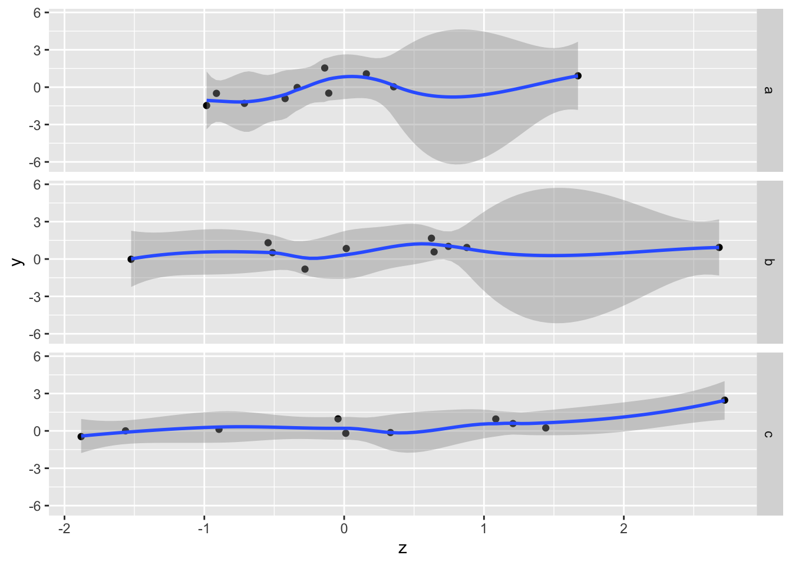
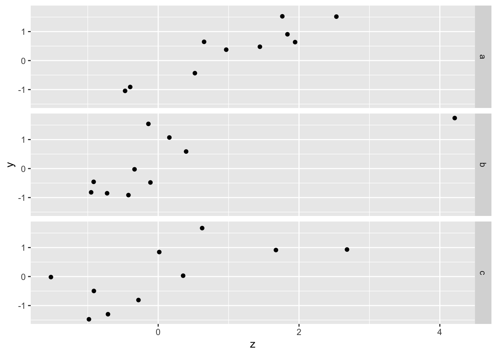
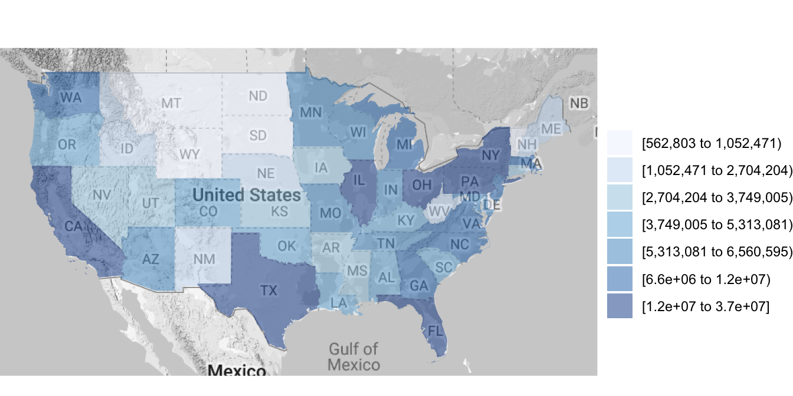
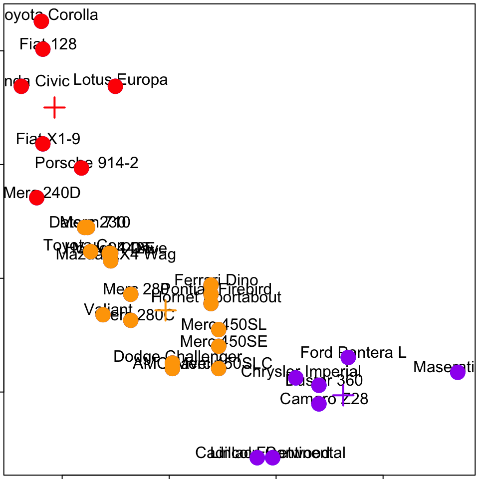
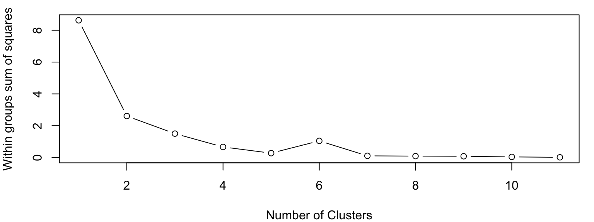
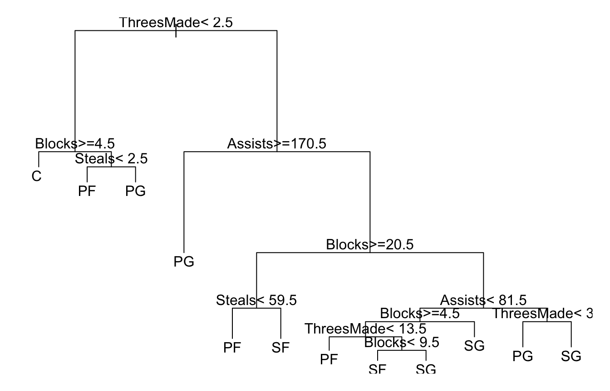

9 資料探勘
撰寫中
9.1 Clustering
汽車基本資料
mtcars.mx<-as.matrix(mtcars)
mtcars.mxs<-scale(mtcars.mx)
#[, 1] mpg Miles/(US) gallon
#[, 2] cyl Number of cylinders 氣缸數
#[, 3] disp Displacement (cu.in.) 排氣量
#[, 4] hp Gross horsepower 馬力
#[, 5] drat Rear axle ratio 後輪軸比
#[, 6] wt Weight (1000 lbs)
#[, 7] qsec 1/4 mile time
#[, 8] vs V/S
#[, 9] am Transmission (0 = automatic, 1 = manual)
#[,10] gear Number of forward gears 前進檔
#[,11] carb Number of carburetors 化油器
head(mtcars.mxs,3)## mpg cyl disp hp drat wt qsec vs am
## Mazda RX4 0.1509 -0.105 -0.5706 -0.5351 0.5675 -0.6104 -0.7772 -0.868 1.19
## Mazda RX4 Wag 0.1509 -0.105 -0.5706 -0.5351 0.5675 -0.3498 -0.4638 -0.868 1.19
## Datsun 710 0.4495 -1.225 -0.9902 -0.7830 0.4740 -0.9170 0.4260 1.116 1.19
## gear carb
## Mazda RX4 0.4236 0.7352
## Mazda RX4 Wag 0.4236 0.7352
## Datsun 710 0.4236 -1.1222各汽車/參數間的相似性？ -heatmap()
par(mar=rep(0.2,4),mfrow=c(1,1))
heatmap(mtcars.mxs)
如何找到相似的物件/事件？
Clustering organizes things that are close into groups
- How do we define close?
- How do we group things?
- How do we visualize the grouping?
- How do we interpret the grouping?
Hierarchical clustering
- An agglomerative approach
- Find closest two things
- Put them together
- Find next closest
- Requires
- A defined distance
- A merging approach
- Produces
- A tree showing how close things are to each other
Hierarchical clustering
- An agglomerative approach
- Find closest two things
- Put them together
- Find next closest
- Requires
A defined distance- A merging approach
- Produces
- A tree showing how close things are to each other
How do we define close? distance
- Most important step
- Garbage in -> garbage out
- Distance or similarity
- Continuous - euclidean distance
- Continuous - correlation similarity
- Binary - manhattan distance
- Pick a distance/similarity that makes sense for your problem
Example distances - Euclidean
\[\sqrt{(A_1-A_2)^2 + (B_1-B_2)^2 + \ldots + (Z_1-Z_2)^2}\]

Example distances - Manhattan
\[|A_1-A_2| + |B_1-B_2| + \ldots + |Z_1-Z_2|\]


Green line: Euclidean, Blue line: Manhattan
9.2 Hierarchical clustering
- An agglomerative approach
- Find closest two things
- Put them together
- Find next closest
- Requires
- A defined distance
A merging approach
- Produces
- A tree showing how close things are to each other
Merging apporach - Agglomerative 聚合 - Single-linkage：取最小值 - Complete-linkage：取最大值 - Average-linkage：取平均值

Hierarchical clustering - hp vs. mpg 
Hierarchical clustering - #1

Hierarchical clustering - #2 
Hierarchical clustering - #3

Hierarchical clustering
- An agglomerative approach
- Find closest two things
- Put them together
- Find next closest
Requires- A defined distance
- A merging approach
- Produces
- A tree showing how close things are to each other
Hierarchical Clustering -dist() 用dist()函數計算距離，使用method=“”設定計算距離的依據
d<-dist(mtcars.mxs) #預設為euclidean
d## Mazda RX4 Mazda RX4 Wag Datsun 710 Hornet 4 Drive
## Mazda RX4 Wag 0.4076
## Datsun 710 3.2431 3.1764
## Hornet 4 Drive 4.4014 4.2633 3.4371
## Hornet Sportabout 3.8804 3.8197 5.0033 3.0422
## Valiant 4.8437 4.6756 3.8681 0.9937
## Duster 360 4.1896 4.1749 5.8959 4.3396
## Merc 240D 3.9973 3.8208 2.5014 2.5336
## Merc 230 4.9177 4.6700 3.3122 3.2699
## Merc 280 3.1378 2.9882 3.2950 2.9860
## Merc 280C 3.2928 3.1171 3.3444 2.9705
## Merc 450SE 3.8563 3.7330 5.1668 3.2469
## Merc 450SL 3.7265 3.6141 5.0139 3.0963
## Merc 450SLC 3.8588 3.7280 5.0837 3.1350
## Cadillac Fleetwood 5.4495 5.2848 6.7702 4.6845
## Lincoln Continental 5.4800 5.3128 6.8197 4.7869
## Chrysler Imperial 5.0973 4.9356 6.5251 4.6034
## Fiat 128 4.0243 3.9407 1.7832 4.1854
## Honda Civic 4.0533 4.0507 2.6459 5.2450
## Toyota Corolla 4.3445 4.2723 2.2120 4.5514
## Toyota Corona 4.3303 4.2137 2.5743 2.1359
## Dodge Challenger 4.1090 4.0530 5.1795 3.1033
## AMC Javelin 3.7602 3.6847 4.8499 2.9347
## Camaro Z28 4.1192 4.1051 5.9278 4.6740
## Pontiac Firebird 4.1721 4.0882 5.2719 3.1815
## Fiat X1-9 3.6111 3.5658 1.0647 3.9830
## Porsche 914-2 2.5949 2.6591 2.9669 5.3633
## Lotus Europa 3.5594 3.6429 2.3505 4.8655
## Ford Pantera L 3.6239 3.7005 5.6725 6.2183
## Ferrari Dino 2.2173 2.3107 4.6712 5.7255
## Maserati Bora 4.9758 5.0071 7.2893 7.4540
## Volvo 142E 2.9056 2.7880 0.9799 3.5836
## Hornet Sportabout Valiant Duster 360 Merc 240D Merc 230
## Mazda RX4 Wag
## Datsun 710
## Hornet 4 Drive
## Hornet Sportabout
## Valiant 3.3988
## Duster 360 1.8907 4.5959
## Merc 240D 4.6075 2.9114 5.6208
## Merc 230 5.3602 3.4091 6.3074 1.7677
## Merc 280 3.7603 3.3860 4.1159 2.3467 3.1737
## Merc 280C 3.8405 3.2902 4.2017 2.3315 2.9644
## Merc 450SE 1.2157 3.3739 1.7195 4.6101 5.2829
## Merc 450SL 1.0582 3.2662 1.7484 4.4790 5.1386
## Merc 450SLC 1.2772 3.2104 1.8280 4.5289 5.0939
## Cadillac Fleetwood 2.8840 4.6250 2.4964 6.0571 6.4720
## Lincoln Continental 2.9685 4.7409 2.4967 6.1201 6.5342
## Chrysler Imperial 2.6262 4.7150 2.1314 5.8475 6.3196
## Fiat 128 5.8776 4.7311 6.9265 2.8477 3.4761
## Honda Civic 6.5055 5.8853 7.2973 3.7433 4.2794
## Toyota Corolla 6.2330 5.1097 7.2823 3.1877 3.6385
## Toyota Corona 4.4095 2.5379 5.4587 1.8188 2.3602
## Dodge Challenger 1.0370 3.2050 2.1566 4.7682 5.5841
## AMC Javelin 0.8360 3.1377 2.0925 4.4434 5.1708
## Camaro Z28 2.3538 5.0149 1.0554 5.7074 6.3746
## Pontiac Firebird 0.5475 3.5076 1.9843 4.7857 5.5292
## Fiat X1-9 5.6028 4.4965 6.5755 2.7366 3.4680
## Porsche 914-2 5.5333 5.9049 6.1678 4.0696 4.9108
## Lotus Europa 5.8906 5.4091 6.5673 3.6797 4.6691
## Ford Pantera L 4.5705 6.6598 3.9757 6.3426 7.0038
## Ferrari Dino 4.8737 6.0394 4.5054 5.2004 6.0348
## Maserati Bora 5.7962 7.6982 4.5081 7.6029 8.1528
## Volvo 142E 4.9105 4.0222 5.5903 2.4866 3.1933
## Merc 280 Merc 280C Merc 450SE Merc 450SL Merc 450SLC
## Mazda RX4 Wag
## Datsun 710
## Hornet 4 Drive
## Hornet Sportabout
## Valiant
## Duster 360
## Merc 240D
## Merc 230
## Merc 280
## Merc 280C 0.4083
## Merc 450SE 3.5037 3.5447
## Merc 450SL 3.4252 3.4663 0.3944
## Merc 450SLC 3.4613 3.4572 0.4901 0.4173
## Cadillac Fleetwood 4.8481 4.8076 2.3752 2.6192 2.4459
## Lincoln Continental 4.8652 4.8311 2.4148 2.6820 2.5174
## Chrysler Imperial 4.5332 4.5498 2.1302 2.3834 2.3303
## Fiat 128 4.1045 4.1942 6.1027 5.9177 6.0523
## Honda Civic 4.3522 4.4597 6.7429 6.5609 6.6876
## Toyota Corolla 4.4495 4.5273 6.4894 6.2849 6.4199
## Toyota Corona 3.0092 2.9592 4.5231 4.3467 4.3683
## Dodge Challenger 3.9899 4.0421 1.2054 1.1528 1.2247
## AMC Javelin 3.5714 3.6040 1.0549 0.9431 0.9627
## Camaro Z28 4.0283 4.1261 2.1735 2.2626 2.3169
## Pontiac Firebird 3.9725 4.0518 1.3039 1.2654 1.4563
## Fiat X1-9 3.7811 3.8552 5.8250 5.6428 5.7475
## Porsche 914-2 4.2060 4.3569 5.7510 5.6099 5.7483
## Lotus Europa 4.1266 4.3110 6.1481 5.9588 6.1321
## Ford Pantera L 4.7638 4.9017 4.6618 4.6521 4.7411
## Ferrari Dino 3.8958 4.0540 4.6304 4.5550 4.6718
## Maserati Bora 5.7612 5.8673 5.4445 5.4647 5.5262
## Volvo 142E 2.7802 2.8201 4.9480 4.8295 4.8807
## Cadillac Fleetwood Lincoln Continental Chrysler Imperial
## Mazda RX4 Wag
## Datsun 710
## Hornet 4 Drive
## Hornet Sportabout
## Valiant
## Duster 360
## Merc 240D
## Merc 230
## Merc 280
## Merc 280C
## Merc 450SE
## Merc 450SL
## Merc 450SLC
## Cadillac Fleetwood
## Lincoln Continental 0.2957
## Chrysler Imperial 1.0635 0.9081
## Fiat 128 7.7973 7.8459 7.4347
## Honda Civic 8.3929 8.4235 7.9703
## Toyota Corolla 8.2005 8.2527 7.8281
## Toyota Corona 6.1485 6.2161 5.9697
## Dodge Challenger 2.8372 2.9549 2.8684
## AMC Javelin 2.8989 2.9910 2.8183
## Camaro Z28 2.8151 2.7412 2.2660
## Pontiac Firebird 2.5701 2.6556 2.3044
## Fiat X1-9 7.5268 7.5797 7.2243
## Porsche 914-2 7.3428 7.3626 6.9370
## Lotus Europa 7.8314 7.8778 7.4656
## Ford Pantera L 5.2909 5.2361 4.8165
## Ferrari Dino 5.8053 5.8069 5.4554
## Maserati Bora 5.6041 5.5359 5.2173
## Volvo 142E 6.4043 6.4300 6.1099
## Fiat 128 Honda Civic Toyota Corolla Toyota Corona
## Mazda RX4 Wag
## Datsun 710
## Hornet 4 Drive
## Hornet Sportabout
## Valiant
## Duster 360
## Merc 240D
## Merc 230
## Merc 280
## Merc 280C
## Merc 450SE
## Merc 450SL
## Merc 450SLC
## Cadillac Fleetwood
## Lincoln Continental
## Chrysler Imperial
## Fiat 128
## Honda Civic 1.9243
## Toyota Corolla 0.5758 1.7799
## Toyota Corona 3.1796 3.9646 3.4387
## Dodge Challenger 6.1898 6.9208 6.5812 4.5624
## AMC Javelin 5.8509 6.4507 6.2194 4.1915
## Camaro Z28 6.9503 7.1027 7.2971 5.5641
## Pontiac Firebird 6.1150 6.7947 6.4857 4.6855
## Fiat X1-9 0.9440 1.8357 1.2632 2.8772
## Porsche 914-2 3.2195 2.9932 3.4110 4.6535
## Lotus Europa 2.3907 2.8623 2.5924 4.2446
## Ford Pantera L 6.6166 6.4835 6.9121 6.7110
## Ferrari Dino 5.4662 5.4860 5.7729 5.8353
## Maserati Bora 8.1808 8.1867 8.4802 8.0606
## Volvo 142E 2.1945 2.6127 2.6006 2.7535
## Dodge Challenger AMC Javelin Camaro Z28 Pontiac Firebird
## Mazda RX4 Wag
## Datsun 710
## Hornet 4 Drive
## Hornet Sportabout
## Valiant
## Duster 360
## Merc 240D
## Merc 230
## Merc 280
## Merc 280C
## Merc 450SE
## Merc 450SL
## Merc 450SLC
## Cadillac Fleetwood
## Lincoln Continental
## Chrysler Imperial
## Fiat 128
## Honda Civic
## Toyota Corolla
## Toyota Corona
## Dodge Challenger
## AMC Javelin 0.7828
## Camaro Z28 2.7783 2.4813
## Pontiac Firebird 1.1943 1.1772 2.4529
## Fiat X1-9 5.8525 5.4949 6.5789 5.8832
## Porsche 914-2 5.8698 5.4886 6.0073 5.8050
## Lotus Europa 6.1425 5.9214 6.6478 6.1639
## Ford Pantera L 5.0079 4.7275 3.6306 4.7027
## Ferrari Dino 5.0081 4.8308 4.5054 5.0962
## Maserati Bora 6.0178 5.9397 4.4569 5.8679
## Volvo 142E 5.1510 4.7543 5.5100 5.1557
## Fiat X1-9 Porsche 914-2 Lotus Europa Ford Pantera L
## Mazda RX4 Wag
## Datsun 710
## Hornet 4 Drive
## Hornet Sportabout
## Valiant
## Duster 360
## Merc 240D
## Merc 230
## Merc 280
## Merc 280C
## Merc 450SE
## Merc 450SL
## Merc 450SLC
## Cadillac Fleetwood
## Lincoln Continental
## Chrysler Imperial
## Fiat 128
## Honda Civic
## Toyota Corolla
## Toyota Corona
## Dodge Challenger
## AMC Javelin
## Camaro Z28
## Pontiac Firebird
## Fiat X1-9
## Porsche 914-2 2.9044
## Lotus Europa 2.1787 2.5614
## Ford Pantera L 6.2259 4.6929 5.5541
## Ferrari Dino 5.1088 3.6306 4.2188 3.0648
## Maserati Bora 7.8703 6.5746 6.9847 3.0288
## Volvo 142E 1.6208 2.8882 2.6646 5.2160
## Ferrari Dino Maserati Bora
## Mazda RX4 Wag
## Datsun 710
## Hornet 4 Drive
## Hornet Sportabout
## Valiant
## Duster 360
## Merc 240D
## Merc 230
## Merc 280
## Merc 280C
## Merc 450SE
## Merc 450SL
## Merc 450SLC
## Cadillac Fleetwood
## Lincoln Continental
## Chrysler Imperial
## Fiat 128
## Honda Civic
## Toyota Corolla
## Toyota Corona
## Dodge Challenger
## AMC Javelin
## Camaro Z28
## Pontiac Firebird
## Fiat X1-9
## Porsche 914-2
## Lotus Europa
## Ford Pantera L
## Ferrari Dino
## Maserati Bora 3.3720
## Volvo 142E 4.2490 6.7446Hierarchical Clustering -dist() 用dist()函數計算距離，使用method=“”設定計算距離的依據，可用方法包括： “euclidean”, “maximum”, “manhattan”, “canberra”, “binary” or “minkowski”
d<-dist(mtcars.mxs, method="manhattan") #計算manhattan距離
d## Mazda RX4 Mazda RX4 Wag Datsun 710 Hornet 4 Drive
## Mazda RX4 Wag 0.5740
## Datsun 710 7.5307 7.4780
## Hornet 4 Drive 11.8673 11.2933 8.9891
## Hornet Sportabout 11.2150 10.6410 15.4555 7.6572
## Valiant 13.3742 12.8002 10.4828 2.1721
## Duster 360 11.7820 11.8348 19.1258 11.5519
## Merc 240D 10.6741 10.1001 5.6193 6.6700
## Merc 230 11.2016 10.6276 6.2969 8.0648
## Merc 280 6.4428 5.8688 7.9461 6.9357
## Merc 280C 7.0109 6.4369 8.1672 6.8322
## Merc 450SE 11.3772 10.8032 16.4306 8.3705
## Merc 450SL 10.9923 10.4183 15.8219 7.7618
## Merc 450SLC 11.6157 11.0417 15.9976 7.9375
## Cadillac Fleetwood 15.4937 14.9197 21.1362 13.0761
## Lincoln Continental 15.5001 14.9261 21.3217 13.2615
## Chrysler Imperial 14.1093 13.5353 20.3786 12.8795
## Fiat 128 10.6008 10.5481 3.2571 11.3173
## Honda Civic 11.5343 11.4815 5.5295 14.5186
## Toyota Corolla 11.8011 11.7484 4.4574 12.5176
## Toyota Corona 11.4343 11.3815 4.9433 4.6838
## Dodge Challenger 11.7697 11.3636 16.1781 8.1179
## AMC Javelin 11.1309 10.5569 15.0580 7.2597
## Camaro Z28 11.4113 11.4641 18.7550 13.1262
## Pontiac Firebird 12.0164 11.4424 16.2233 8.1632
## Fiat X1-9 9.7041 9.6513 2.3604 11.0249
## Porsche 914-2 6.7567 7.0620 6.9555 15.7461
## Lotus Europa 9.4453 9.5269 5.5626 13.7566
## Ford Pantera L 9.3827 9.4354 16.9134 18.5443
## Ferrari Dino 5.0926 5.3600 12.1942 15.6059
## Maserati Bora 13.0517 13.1044 20.3954 20.7747
## Volvo 142E 6.4917 6.1118 2.1517 9.0594
## Hornet Sportabout Valiant Duster 360 Merc 240D Merc 230
## Mazda RX4 Wag
## Datsun 710
## Hornet 4 Drive
## Hornet Sportabout
## Valiant 8.4734
## Duster 360 3.8947 12.1281
## Merc 240D 12.8272 7.5370 16.4974
## Merc 230 14.2219 8.6855 17.8922 2.8883
## Merc 280 10.2477 7.3853 11.4415 5.9162 6.4507
## Merc 280C 10.6499 6.9168 11.5450 5.8128 6.3472
## Merc 450SE 2.7592 8.9093 4.2408 13.8023 15.1971
## Merc 450SL 2.3743 8.3006 4.1546 13.1936 14.5883
## Merc 450SLC 2.9977 8.4763 4.0811 13.3693 14.7640
## Cadillac Fleetwood 6.7552 13.0912 5.5724 18.5079 19.9026
## Lincoln Continental 6.7616 13.5385 5.2871 18.6933 20.0881
## Chrysler Imperial 5.6700 13.4558 3.6663 17.7502 19.1450
## Fiat 128 18.7126 12.7774 22.3829 6.5953 8.3297
## Honda Civic 19.6461 16.0124 23.3163 8.4753 10.3264
## Toyota Corolla 19.9129 13.4965 23.5832 7.2852 9.0487
## Toyota Corona 12.0791 5.5396 15.7494 3.9460 5.1152
## Dodge Challenger 2.1296 7.4972 4.6309 13.5497 14.9445
## AMC Javelin 1.5590 7.8870 4.2922 12.4296 13.8244
## Camaro Z28 5.6304 13.7025 1.7357 16.2763 17.5214
## Pontiac Firebird 0.9673 9.1045 4.5963 13.5950 14.9897
## Fiat X1-9 17.8159 12.5186 21.4861 6.3365 8.0709
## Porsche 914-2 15.2266 17.2399 18.5387 10.5488 11.5539
## Lotus Europa 17.1177 15.3962 20.6536 9.1135 10.5630
## Ford Pantera L 11.4923 19.6214 8.3611 18.9326 19.4261
## Ferrari Dino 12.6262 16.6814 12.4993 14.4599 15.7455
## Maserati Bora 14.0696 21.3510 10.4072 21.7751 23.1699
## Volvo 142E 14.2764 10.6698 17.9466 5.3827 5.7401
## Merc 280 Merc 280C Merc 450SE Merc 450SL Merc 450SLC
## Mazda RX4 Wag
## Datsun 710
## Hornet 4 Drive
## Hornet Sportabout
## Valiant
## Duster 360
## Merc 240D
## Merc 230
## Merc 280
## Merc 280C 0.5681
## Merc 450SE 9.9846 10.0881
## Merc 450SL 9.3759 9.4794 0.6087
## Merc 450SLC 9.5516 9.6551 0.8313 0.6234
## Cadillac Fleetwood 13.4520 13.5554 5.3547 5.7396 5.1386
## Lincoln Continental 13.6374 13.7409 5.3611 5.7460 5.3241
## Chrysler Imperial 12.6943 12.7978 4.5688 5.1552 4.9795
## Fiat 128 10.9414 10.8379 19.6878 19.0790 19.2547
## Honda Civic 11.8748 12.1966 20.6212 20.0125 20.1881
## Toyota Corolla 12.1417 12.0382 20.8881 20.2793 20.4550
## Toyota Corona 7.8416 7.7381 13.0543 12.4455 12.6212
## Dodge Challenger 10.9703 11.0738 2.9850 2.8988 2.9248
## AMC Javelin 9.8604 9.9639 2.3379 2.2516 2.1782
## Camaro Z28 11.0708 11.1743 5.2633 5.4019 5.2262
## Pontiac Firebird 11.0156 11.5836 2.6033 2.4534 2.9746
## Fiat X1-9 10.0446 9.9411 18.7910 18.1823 18.3580
## Porsche 914-2 12.8561 13.4241 16.6270 16.2421 16.8655
## Lotus Europa 11.3401 11.9082 18.5181 18.1332 18.7566
## Ford Pantera L 13.5273 13.6308 11.9589 11.8727 11.9983
## Ferrari Dino 10.4182 10.9863 12.7884 12.4035 13.0269
## Maserati Bora 16.7192 16.8227 13.4637 13.3774 13.3039
## Volvo 142E 6.5051 6.7374 15.2515 14.6428 14.8185
## Cadillac Fleetwood Lincoln Continental Chrysler Imperial
## Mazda RX4 Wag
## Datsun 710
## Hornet 4 Drive
## Hornet Sportabout
## Valiant
## Duster 360
## Merc 240D
## Merc 230
## Merc 280
## Merc 280C
## Merc 450SE
## Merc 450SL
## Merc 450SLC
## Cadillac Fleetwood
## Lincoln Continental 0.6410
## Chrysler Imperial 2.3078 1.8284
## Fiat 128 24.3933 24.5788 23.6357
## Honda Civic 25.3268 25.5122 24.5691
## Toyota Corolla 25.5936 25.7791 24.8360
## Toyota Corona 17.7598 17.9453 17.0022
## Dodge Challenger 6.8364 7.1046 6.5741
## AMC Javelin 6.8393 6.8457 5.7542
## Camaro Z28 6.4244 6.1391 4.7753
## Pontiac Firebird 5.9538 5.9602 5.1304
## Fiat X1-9 23.4966 23.6820 22.7389
## Porsche 914-2 21.9817 21.9881 20.5973
## Lotus Europa 23.8728 23.8792 22.4884
## Ford Pantera L 13.9335 13.6482 11.8198
## Ferrari Dino 16.9049 16.9113 15.5205
## Maserati Bora 15.9796 15.6943 13.8660
## Volvo 142E 19.9571 20.1426 19.1995
## Fiat 128 Honda Civic Toyota Corolla Toyota Corona
## Mazda RX4 Wag
## Datsun 710
## Hornet 4 Drive
## Hornet Sportabout
## Valiant
## Duster 360
## Merc 240D
## Merc 230
## Merc 280
## Merc 280C
## Merc 450SE
## Merc 450SL
## Merc 450SLC
## Cadillac Fleetwood
## Lincoln Continental
## Chrysler Imperial
## Fiat 128
## Honda Civic 3.8986
## Toyota Corolla 1.2003 3.7516
## Toyota Corona 7.2379 10.4728 7.9569
## Dodge Challenger 19.4352 20.3686 20.6355 12.8017
## AMC Javelin 18.3151 19.2485 19.5154 11.6816
## Camaro Z28 22.0121 22.9456 23.2124 15.4909
## Pontiac Firebird 19.4805 20.4139 20.6808 12.8470
## Fiat X1-9 1.4384 3.4937 2.0971 6.9791
## Porsche 914-2 7.9868 7.4884 8.5408 11.7035
## Lotus Europa 5.8443 5.5819 6.2985 10.0900
## Ford Pantera L 19.3102 19.7200 19.9868 20.8170
## Ferrari Dino 15.4514 16.3848 16.6517 15.5367
## Maserati Bora 23.6525 24.5859 24.8528 23.7379
## Volvo 142E 4.5485 5.4592 5.6365 6.0552
## Dodge Challenger AMC Javelin Camaro Z28 Pontiac Firebird
## Mazda RX4 Wag
## Datsun 710
## Hornet 4 Drive
## Hornet Sportabout
## Valiant
## Duster 360
## Merc 240D
## Merc 230
## Merc 280
## Merc 280C
## Merc 450SE
## Merc 450SL
## Merc 450SLC
## Cadillac Fleetwood
## Lincoln Continental
## Chrysler Imperial
## Fiat 128
## Honda Civic
## Toyota Corolla
## Toyota Corona
## Dodge Challenger
## AMC Javelin 1.2197
## Camaro Z28 6.2053 5.8666
## Pontiac Firebird 2.6715 2.4927 5.7801
## Fiat X1-9 18.5384 17.4183 21.1154 18.5837
## Porsche 914-2 15.7813 15.1424 18.1679 16.0280
## Lotus Europa 17.7059 17.0335 20.2829 17.9191
## Ford Pantera L 12.3464 11.9335 7.5252 12.4596
## Ferrari Dino 13.9101 13.2713 12.1595 13.4276
## Maserati Bora 14.1281 13.5635 10.2659 14.7712
## Volvo 142E 14.9990 13.8789 17.5759 15.0442
## Fiat X1-9 Porsche 914-2 Lotus Europa Ford Pantera L
## Mazda RX4 Wag
## Datsun 710
## Hornet 4 Drive
## Hornet Sportabout
## Valiant
## Duster 360
## Merc 240D
## Merc 230
## Merc 280
## Merc 280C
## Merc 450SE
## Merc 450SL
## Merc 450SLC
## Cadillac Fleetwood
## Lincoln Continental
## Chrysler Imperial
## Fiat 128
## Honda Civic
## Toyota Corolla
## Toyota Corona
## Dodge Challenger
## AMC Javelin
## Camaro Z28
## Pontiac Firebird
## Fiat X1-9
## Porsche 914-2 6.9674
## Lotus Europa 5.4346 5.2254
## Ford Pantera L 18.4135 12.2316 16.0298
## Ferrari Dino 14.5546 8.8964 11.0113 8.0560
## Maserati Bora 22.7557 17.0976 19.2125 5.7847
## Volvo 142E 3.6517 6.6867 5.9981 14.7618
## Ferrari Dino Maserati Bora
## Mazda RX4 Wag
## Datsun 710
## Hornet 4 Drive
## Hornet Sportabout
## Valiant
## Duster 360
## Merc 240D
## Merc 230
## Merc 280
## Merc 280C
## Merc 450SE
## Merc 450SL
## Merc 450SLC
## Cadillac Fleetwood
## Lincoln Continental
## Chrysler Imperial
## Fiat 128
## Honda Civic
## Toyota Corolla
## Toyota Corona
## Dodge Challenger
## AMC Javelin
## Camaro Z28
## Pontiac Firebird
## Fiat X1-9
## Porsche 914-2
## Lotus Europa
## Ford Pantera L
## Ferrari Dino
## Maserati Bora 8.2011
## Volvo 142E 11.0356 19.2163Hierarchical Clustering -hclust() 用hclust函數畫圖，必要參數是個觀察職的距離（可用dist()函數計算）
par(mar=rep(2,4),mfrow=c(1,1))
hc<-hclust(dist(mtcars.mxs)) #可用method參數設定聚合方法，預設為complete
plot(hc)
Hierarchical Clustering -hclust() 用hclust函數畫圖，必要參數是個觀察職的距離（可用dist()函數計算）
par(mar=rep(2,4),mfrow=c(1,1))
hc<-hclust(dist(mtcars.mxs),method="average") #聚合方法為計算平均距離
plot(hc)
Hierarchical Clustering -cutree()
clusterCut <- cutree(hc, k=5) #分5群
sort(clusterCut)## Mazda RX4 Mazda RX4 Wag Porsche 914-2 Ferrari Dino
## 1 1 1 1
## Datsun 710 Fiat 128 Honda Civic Toyota Corolla
## 2 2 2 2
## Fiat X1-9 Lotus Europa Volvo 142E Hornet 4 Drive
## 2 2 2 3
## Valiant Merc 240D Merc 230 Merc 280
## 3 3 3 3
## Merc 280C Toyota Corona Hornet Sportabout Duster 360
## 3 3 4 4
## Merc 450SE Merc 450SL Merc 450SLC Cadillac Fleetwood
## 4 4 4 4
## Lincoln Continental Chrysler Imperial Dodge Challenger AMC Javelin
## 4 4 4 4
## Camaro Z28 Pontiac Firebird Ford Pantera L Maserati Bora
## 4 4 5 5HC- clusters & variables
ggplot()+geom_point(data=mtcars,
aes(x=hp,y=mpg,color=as.factor(clusterCut)))
Hierarchical Clustering -cutree(),2
clusterCut <- cutree(hc,h =4) #切在高度=4的地方（距離=4）
sort(clusterCut)## Mazda RX4 Mazda RX4 Wag Datsun 710 Fiat 128
## 1 1 1 1
## Honda Civic Toyota Corolla Fiat X1-9 Porsche 914-2
## 1 1 1 1
## Lotus Europa Ferrari Dino Volvo 142E Hornet 4 Drive
## 1 1 1 2
## Valiant Merc 240D Merc 230 Merc 280
## 2 2 2 2
## Merc 280C Toyota Corona Hornet Sportabout Duster 360
## 2 2 3 3
## Merc 450SE Merc 450SL Merc 450SLC Cadillac Fleetwood
## 3 3 3 3
## Lincoln Continental Chrysler Imperial Dodge Challenger AMC Javelin
## 3 3 3 3
## Camaro Z28 Pontiac Firebird Ford Pantera L Maserati Bora
## 3 3 4 4Cluster the data -heatmap(),2
par(mar=rep(0.2,4),mfrow=c(1,1))
heatmap(mtcars.mxs)
Hierarchical clustering - hclust
distxy <- dist(mtcars.mxs)
hClustering <- hclust(distxy)
plot(hClustering)
Hierarchical clustering: summary - 可快速瀏覽觀察值與各欄位的關係
- 分群結果可能被以下參數影響：
- 計算距離的方法
- 分群依據
- 更改數值的大小
- 可能會遇到的問題：
- 有時會不太清楚要如何切割分群結果
9.3 K-means clustering
- 執行步驟
- 指定要分幾群
- 計算每一群的中心點
- 將各個物件/觀察值指定給最近的中心點
- 依照新的分群計算新的中心點
- 輸入
- 計算距離的資料（數值）
- 要分成幾群 # of clusters
- 預設個群的中間點位置
- 產出
- 計算出每’群‘的中心點
- 指定每個觀察值所在的’群‘
x<-scale(mtcars$hp[-1]);y<-scale(mtcars$mpg[-1])
plot(x,y,col="blue",pch=19,cex=2)
text(x+0.05,y+0.05,labels=labelCar)




9.4 kmeans()
- Important parameters:
x,centers,iter.max,nstart
dataFrame <- data.frame(x,y)
kmeansObj <- kmeans(dataFrame,centers=3)
names(kmeansObj)## [1] "cluster" "centers" "totss" "withinss" "tot.withinss"
## [6] "betweenss" "size" "iter" "ifault"kmeansObj$cluster## [1] 1 1 1 3 1 3 1 1 1 1 3 3 3 3 3 3 2 2 2 1 3 3 3 3 2 2 2 3 3 3 1par(mar=rep(0.2,4))
plot(x,y,col=kmeansObj$cluster,pch=19,cex=2)
points(kmeansObj$centers,col=1:3,pch=3,cex=3,lwd=3)
9.4.1 Heatmaps
set.seed(1234)
dataMatrix <- as.matrix(dataFrame)[sample(1:12),]
kmeansObj <- kmeans(dataMatrix,centers=3)
par(mfrow=c(1,2), mar = c(2, 4, 0.1, 0.1))
image(t(dataMatrix)[,nrow(dataMatrix):1],yaxt="n")
image(t(dataMatrix)[,order(kmeansObj$cluster)],yaxt="n")
9.4.2 K-means注意事項
- 需要決定# of clusters
- 用眼睛/人工/特殊要求選
- 用 cross validation/information theory選
- Determining the number of clusters
- K-means 沒有一定的結果
- 不同的 # of clusters
- 不同的 # of iterations
kmeans(), k=2

kmeans(), k=3

kmeans(), k=4

Use sum of squared error (SSE) scree plot to optimize the number of clusters
SSE: The sum of the squared distance between each member of a cluster and its cluster centroid.

SSE screen plot withinss
dataMatrix <- as.matrix(dataFrame)[sample(1:12),]
wss <- (nrow(dataMatrix)-1)*sum(apply(dataMatrix,2,var))
for (i in 2:(nrow(dataMatrix)-1)) {
wss[i] <- sum(kmeans(dataMatrix,centers=i)$withinss)
}
par(mfrow=c(1,1), mar = c(4,4,1,1)) #下,左,上,右
plot(1:(nrow(dataMatrix)-1), wss, type="b", xlab="Number of Clusters",
ylab="Within groups sum of squares")
9.5 Machine Learning 機器學習
什麼是Machine Learning？ - Learning from data - Machine learning from data 
什麼是Machine Learning？ - 建立可以從輸入資料學習新資訊，變成智慧的演算法 - 演算法可以基於輸入資料，預測事件或協助決策
- 資料太
少？太髒？–>學不好
Data —- Machine Learning —-> Skill
Skill: 變準/變好/賺更多…etc
Machine Learning vs. Artificial Intelligence - ML: use data to compute something that improves performance - AI: compute something that shows intelligent behavior
ML is one possible and popular route to realize AI
Machine Learning無所不在 - 天氣預測 - 搜尋建議、購物建議 - 股市預測 - 臉部辨識、指紋辨識 - 垃圾郵件標記 - 尿布啤酒
什麼時候需要ML? - 有一些模式/模型可學 - 很難定義這些模式/模型 - 有資料可學這些模式/模型
Machine Learning步驟 
Learning 種類 - Classification 分類 - 分兩類（P/N, Yes/No, M/F, Sick/Not sick） - 分多類 (A/B/C/D)
- Regression 迴歸
- 真實的’值’（股票、氣溫）
- Ranking
- 排序（Google page rank）
- Clustering
- 分群
Machine Learning 種類 -1
- Supervised learning 監督式學習
- Regression 迴歸
- Linear Regression 線性迴歸
- Logistic Regression 羅吉斯迴歸、邏輯迴歸
- Classification 分類
- Support Vector Machines 支持向量機
- Decision Trees 決策樹
- Neural Networks 神經網路
- K-Nearest Neighbor
- Regression 迴歸
Supervised learning 監督式學習 
Machine Learning 種類 -2 - Unsupervised learning 非監督式學習 - Clustering! 分群 - Hierarchical clustering 階層式分群 - K-means clustering - Association Rules 關聯式規則
Unsupervised learning 非監督式學習 
怎麼選Algorithms? 
Regression Analysis 迴歸分析 了解兩個或多個變數間是否相關、相關方向與強度，並建立數學模型以便觀察特定變數來預測研究者感興趣的變數
- Linear Regression 線性迴歸
- Logistic Regression 羅吉斯迴歸、邏輯迴歸
Linear Regression 線性迴歸 
Logistic Regression 邏輯迴歸 
Regression Analysis 迴歸分析
Linear Regression 線性迴歸- Logistic Regression 羅吉斯迴歸、邏輯迴歸
來用在NBA的資料看看！
#讀入SportsAnalytics package
if (!require('SportsAnalytics')){
install.packages("SportsAnalytics")
library(SportsAnalytics)
}
#擷取2015-2016年球季球員資料
NBA1516<-fetch_NBAPlayerStatistics("15-16")NBA得分與上場分鐘數的線性迴歸分析
library(ggplot2)
ggplot(NBA1516,aes(x=TotalMinutesPlayed,y=TotalPoints))+
geom_point()+geom_smooth(method = "glm")
簡單線性迴歸分析- glm()
# formula: Y~X1+X2+...+Xn Y:依變項 X:自變項
# data: 資料
glm(TotalPoints~TotalMinutesPlayed,data =NBA1516)##
## Call: glm(formula = TotalPoints ~ TotalMinutesPlayed, data = NBA1516)
##
## Coefficients:
## (Intercept) TotalMinutesPlayed
## -85.907 0.493
##
## Degrees of Freedom: 475 Total (i.e. Null); 474 Residual
## Null Deviance: 99400000
## Residual Deviance: 16700000 AIC: 6340TotalPoints = 0.4931 * TotalMinutesPlayed -85.9071
其實glm()是廣義線性迴歸模型 - generalized linear models (glm) - 包括了線性迴歸模型和邏輯迴歸模型 - 線性模型也可用lm() - 如何修改預設模型？ - family="gaussian" 線性模型模型 - family="binomial" 邏輯迴歸模型 - family="poisson" 卜瓦松迴歸模型
Gaussian distribution 高斯函數是常態分布的密度函數

Binomial distribution 二項分布是n個獨立的是/非試驗中成功的次數的離散機率分布

Poisson distribution 次數分佈
- 某一服務設施在一定時間內受到的服務請求的次數
- 公車站的候客人數
- 機器故障數
- 自然災害發生的次數
- DNA序列的變異數…..

得分與上場分鐘數和兩分球出手數的關係 - 多變量線性迴歸分析
# e+01: 10^1 / e-04: 10^(-4)
glm(TotalPoints~TotalMinutesPlayed+FieldGoalsAttempted,
data =NBA1516)##
## Call: glm(formula = TotalPoints ~ TotalMinutesPlayed + FieldGoalsAttempted,
## data = NBA1516)
##
## Coefficients:
## (Intercept) TotalMinutesPlayed FieldGoalsAttempted
## -1.80e+01 -2.35e-04 1.26e+00
##
## Degrees of Freedom: 475 Total (i.e. Null); 473 Residual
## Null Deviance: 99400000
## Residual Deviance: 2160000 AIC: 5370TotalPoints = -0.0002347 * TotalMinutesPlayed + 1.255794 *FieldGoalsAttempted -17.99
得分與上場分鐘數和兩分球出手數和守備位置的關係 - 多變量線性迴歸分析
glm(TotalPoints~TotalMinutesPlayed+FieldGoalsAttempted+Position,
data =NBA1516)##
## Call: glm(formula = TotalPoints ~ TotalMinutesPlayed + FieldGoalsAttempted +
## Position, data = NBA1516)
##
## Coefficients:
## (Intercept) TotalMinutesPlayed FieldGoalsAttempted
## 22.85222 -0.00654 1.27572
## PositionPF PositionPG PositionSF
## -39.41633 -65.03465 -38.52230
## PositionSG
## -52.17514
##
## Degrees of Freedom: 474 Total (i.e. Null); 468 Residual
## (1 observation deleted due to missingness)
## Null Deviance: 99100000
## Residual Deviance: 1970000 AIC: 5320# e+01: 10^1 / e-04: 10^(-4)TotalPoints = -0.0065 * TotalMinutesPlayed + 1.28 FieldGoalsAttempted +22.85 + 22.85 PositionPF + -65.03 * PositionPG + -38.52 * PositionSF + -52.18 * PositionSG
虛擬變項 Dummy Variable
- PositionPF? PositionPG? PositionSF? PositionSG?
- 如果是控球後衛（PG），會得到…
- PositionPF=0
- PositionPG=1
- PositionSF=0
- PositionSG=0
- 中鋒去哪了？—基準項
- PositionPF=0
- PositionPG=0
- PositionSF=0
- PositionSG=0
多變量線性迴歸分析
- 假設：各變數相互獨立！
- 若自變項X是類別變項，需要建立
虛擬變項 - 在R裡，
類別變項請記得轉成factor，R會自動建立虛擬變項 - 用在
依變數為連續變數，自變數為連續變數或虛擬變數的場合
class(NBA1516$Position)## [1] "factor"levels(NBA1516$Position)## [1] "C" "PF" "PG" "SF" "SG"用哪個計算比較準？
- 可能不一定有適合的模型
- 常用的判斷準則
- Akaike’s Information Criterion (AIC)
- Bayesian Information Criterion (BIC)
- 數值越小越好
用哪個計算比較準？
OneVar<-glm(TotalPoints~TotalMinutesPlayed,data =NBA1516)
TwoVar<-glm(TotalPoints~TotalMinutesPlayed+FieldGoalsAttempted,
data =NBA1516)
ThreeVar<-glm(TotalPoints~TotalMinutesPlayed+FieldGoalsAttempted+Position,
data =NBA1516)
c(OneVar$aic,TwoVar$aic,ThreeVar$aic)## [1] 6339 5367 5322所有參數都有用嗎？
sum2<-summary(TwoVar)
sum2$coefficients## Estimate Std. Error t value Pr(>|t|)
## (Intercept) -1.799e+01 5.659758 -3.17833 1.578e-03
## TotalMinutesPlayed -2.347e-04 0.009475 -0.02477 9.802e-01
## FieldGoalsAttempted 1.256e+00 0.022239 56.46683 2.474e-212所有參數都有用嗎？
sum3<-summary(ThreeVar)
sum3$coefficients## Estimate Std. Error t value Pr(>|t|)
## (Intercept) 22.852223 9.01471 2.5350 1.157e-02
## TotalMinutesPlayed -0.006537 0.00920 -0.7105 4.777e-01
## FieldGoalsAttempted 1.275721 0.02165 58.9325 1.145e-218
## PositionPF -39.416327 9.93654 -3.9668 8.426e-05
## PositionPG -65.034646 10.26925 -6.3329 5.649e-10
## PositionSF -38.522299 10.48817 -3.6729 2.675e-04
## PositionSG -52.175144 9.98533 -5.2252 2.625e-07Regression Analysis 迴歸分析
- Linear Regression 線性迴歸
Logistic Regression 羅吉斯迴歸
Logistic Regression 羅吉斯迴歸
- 用在
依變數為二元變數（非0即1）的場合 - 生病/沒生病
- 錄取/不錄取
family="binomial"邏輯迴歸模型
為什麼錄取/不錄取？
mydata <- read.csv("http://www.ats.ucla.edu/stat/data/binary.csv")
# GRE:某考試成績, GPA:在校平均成績, rank:學校聲望
head(mydata)## admit gre gpa rank
## 1 0 380 3.61 3
## 2 1 660 3.67 3
## 3 1 800 4.00 1
## 4 1 640 3.19 4
## 5 0 520 2.93 4
## 6 1 760 3.00 2Hmm….
mydata$rank <- factor(mydata$rank)
mylogit <- glm(admit ~ gre + gpa + rank,
data = mydata, family = "binomial")
sum<-summary(mylogit)
sum$coefficients## Estimate Std. Error z value Pr(>|z|)
## (Intercept) -3.989979 1.139951 -3.500 0.0004650
## gre 0.002264 0.001094 2.070 0.0384651
## gpa 0.804038 0.331819 2.423 0.0153879
## rank2 -0.675443 0.316490 -2.134 0.0328288
## rank3 -1.340204 0.345306 -3.881 0.0001039
## rank4 -1.551464 0.417832 -3.713 0.00020479.6 Decision Trees 決策樹
什麼是決策樹？ 在樹狀目錄中建立一系列分割，以建立模型。這些分割會表示成「節點」(Node)。每次發現輸入資料行與可預測資料行有明顯地相互關聯時，此演算法就會在模型中加入一個節點。演算法決定分岔的方式不同，視它預測連續資料行或分隔資料行而定。

決策樹的種類 - Classificaiton - Regression - Classification And Regression Tree (CART)
用籃板/三分/助攻/抄截來判斷位置
if (!require('rpart')){
install.packages("rpart")
library(rpart)
}
DT<-rpart(Position~Blocks+ThreesMade+Assists+Steals,data=NBA1516)
DT## n=475 (1 observation deleted due to missingness)
##
## node), split, n, loss, yval, (yprob)
## * denotes terminal node
##
## 1) root 475 364 PF (0.15 0.23 0.21 0.18 0.23)
## 2) ThreesMade< 2.5 132 74 C (0.44 0.35 0.098 0.053 0.061)
## 4) Blocks>=4.5 89 37 C (0.58 0.38 0.011 0.011 0.011) *
## 5) Blocks< 4.5 43 31 PF (0.14 0.28 0.28 0.14 0.16)
## 10) Steals< 2.5 29 19 PF (0.17 0.34 0.14 0.21 0.14) *
## 11) Steals>=2.5 14 6 PG (0.071 0.14 0.57 0 0.21) *
## 3) ThreesMade>=2.5 343 242 SG (0.035 0.19 0.25 0.23 0.29)
## 6) Assists>=170.5 96 39 PG (0.031 0.052 0.59 0.15 0.18) *
## 7) Assists< 170.5 247 163 SG (0.036 0.24 0.12 0.26 0.34)
## 14) Blocks>=20.5 80 42 PF (0.062 0.48 0 0.26 0.2)
## 28) Steals< 59.5 58 21 PF (0.069 0.64 0 0.14 0.16) *
## 29) Steals>=59.5 22 9 SF (0.045 0.045 0 0.59 0.32) *
## 15) Blocks< 20.5 167 99 SG (0.024 0.13 0.17 0.26 0.41)
## 30) Assists< 81.5 110 68 SG (0.027 0.18 0.091 0.32 0.38)
## 60) Blocks>=4.5 63 39 SF (0.032 0.29 0.016 0.38 0.29)
## 120) ThreesMade< 13.5 19 9 PF (0.11 0.53 0 0.26 0.11) *
## 121) ThreesMade>=13.5 44 25 SF (0 0.18 0.023 0.43 0.36)
## 242) Blocks< 9.5 17 7 SF (0 0.18 0.059 0.59 0.18) *
## 243) Blocks>=9.5 27 14 SG (0 0.19 0 0.33 0.48) *
## 61) Blocks< 4.5 47 23 SG (0.021 0.043 0.19 0.23 0.51) *
## 31) Assists>=81.5 57 31 SG (0.018 0.035 0.33 0.16 0.46)
## 62) ThreesMade< 37 17 5 PG (0 0.12 0.71 0.059 0.12) *
## 63) ThreesMade>=37 40 16 SG (0.025 0 0.17 0.2 0.6) *#控球後衛（PG）、得分後衛（SG）、小前鋒（SF）、大前鋒（PF）和中鋒（C）用籃板/三分/助攻/抄截來判斷位置
par(mfrow=c(1,1), mar = rep(1,4)) #下,左,上,右
plot(DT)
text(DT, use.n=F, all=F, cex=1)
#控球後衛（PG）、得分後衛（SG）、小前鋒（SF）、大前鋒（PF）和中鋒（C）用籃板/三分/助攻/抄截來判斷位置 預設的plot()真的太難用，改用rpart.plot package裡面的prp()
if (!require('rpart.plot')){
install.packages("rpart.plot")
library(rpart.plot)
}
prp(DT) # Will plot the tree
用籃板/三分/助攻/抄截來判斷位置
prp(DT)
決策樹演算法怎麼決定節點 - Gini impurity - Information gain - Variance reduction
…有機會再說吧……
9.7 Association Rules 關聯式規則
什麼是關聯式規則？ - 用於從大量數據中挖掘出有價值的數據項之間的相關關係 - 不考慮項目的次序，而僅考慮其組合 - 購物籃分析 (Market Basket Analysis) - Apriori演算法是挖掘布林關聯規則 (Boolean association rules) 頻繁項集的算法
Apriori演算法 
超市資料分析：讀取資料
# Load the libraries
if (!require('arules')){
install.packages("arules");library(arules) #for Apriori演算法
}
if (!require('datasets')){
install.packages("datasets");library(datasets) #for Groceries data
}
data(Groceries) # Load the data set
Groceries@data@Dim #169 種商品，9835筆交易資料## [1] 169 9835超市資料長這樣 
超市資料分析：關聯式分析apriori()
# Get the rules
rules <- apriori(Groceries, # data= Groceries
parameter = list(supp = 0.001, conf = 0.8), #參數最低限度
control = list(verbose=F)) #不要顯示output
options(digits=2) # Only 2 digits
inspect(rules[1:5]) # Show the top 5 rules## lhs rhs support confidence lift
## [1] {liquor,red/blush wine} => {bottled beer} 0.0019 0.90 11.2
## [2] {curd,cereals} => {whole milk} 0.0010 0.91 3.6
## [3] {yogurt,cereals} => {whole milk} 0.0017 0.81 3.2
## [4] {butter,jam} => {whole milk} 0.0010 0.83 3.3
## [5] {soups,bottled beer} => {whole milk} 0.0011 0.92 3.6如何解讀模型 啤酒=>尿布
Support: 一次交易中，包括規則內的物品的機率。買啤酒同時買尿布的機率。交集Confidence: 包含左邊物品A的交易也會包含右邊物品B的條件機率。在買了啤酒的顧客中，有買尿布的比例。Lift: 規則的信心比期望值高多少。（買了啤酒以後，有買尿布的機率）/（在所有顧客群中買尿布的機率）lift=1: items on the left and right are independent.


列出最有關連的幾條規則
rules<-sort(rules, by="confidence", decreasing=TRUE) #按照confidence排序
inspect(rules[1:5]) # Show the top 5 rules## lhs rhs support confidence lift
## [1] {rice,
## sugar} => {whole milk} 0.0012 1 3.9
## [2] {canned fish,
## hygiene articles} => {whole milk} 0.0011 1 3.9
## [3] {root vegetables,
## butter,
## rice} => {whole milk} 0.0010 1 3.9
## [4] {root vegetables,
## whipped/sour cream,
## flour} => {whole milk} 0.0017 1 3.9
## [5] {butter,
## soft cheese,
## domestic eggs} => {whole milk} 0.0010 1 3.9特別針對某項商品，右邊 買了什麼東西的人，會買牛奶呢？
rulesR<-apriori(data=Groceries, parameter=list(supp=0.001,conf = 0.08),
appearance = list(default="lhs",rhs="whole milk"), #設定右邊一定要是牛奶
control = list(verbose=F)) #不要顯示output
rulesR<-sort(rulesR, decreasing=TRUE,by="confidence") #按照confidence排序
inspect(rulesR[1:5]) # Show the top 5 rules## lhs rhs support confidence lift
## [1] {rice,
## sugar} => {whole milk} 0.0012 1 3.9
## [2] {canned fish,
## hygiene articles} => {whole milk} 0.0011 1 3.9
## [3] {root vegetables,
## butter,
## rice} => {whole milk} 0.0010 1 3.9
## [4] {root vegetables,
## whipped/sour cream,
## flour} => {whole milk} 0.0017 1 3.9
## [5] {butter,
## soft cheese,
## domestic eggs} => {whole milk} 0.0010 1 3.9特別針對某項商品，左邊 買了牛奶的人，會買什麼呢？
rulesL<-apriori(data=Groceries, parameter=list(supp=0.001,conf = 0.15,minlen=2),
appearance = list(default="rhs",lhs="whole milk"), #設定左邊一定要是牛奶
control = list(verbose=F)) #不要顯示output
rulesL<-sort(rulesL, decreasing=TRUE,by="confidence") #按照confidence排序
inspect(rulesL[1:5]) # Show the top 5 rules## lhs rhs support confidence lift
## [1] {whole milk} => {other vegetables} 0.075 0.29 1.5
## [2] {whole milk} => {rolls/buns} 0.057 0.22 1.2
## [3] {whole milk} => {yogurt} 0.056 0.22 1.6
## [4] {whole milk} => {root vegetables} 0.049 0.19 1.8
## [5] {whole milk} => {tropical fruit} 0.042 0.17 1.6規則視覺化
if (!require('arulesViz')){
install.packages("arulesViz"); library(arulesViz)
}
#Mac->http://planspace.org/2013/01/17/fix-r-tcltk-dependency-problem-on-mac/
plot(rules,method="graph",interactive=TRUE,shading=NA) #會跑一陣子

9.7.1 參考資料
- 台大資工林軒田教授（田神）：
- Market Basket Analysis with R
模型驗證？！ - Training set, Development set: 讓演算法學到知識 - Test set, Validation set: 驗證學的怎麼樣 - 通常會比例分配 - 2/3的資料設為Training set - 剩下的1/3做驗證Test set
把NBA的資料讀入
#讀入SportsAnalytics package
if (!require('SportsAnalytics')){
install.packages("SportsAnalytics")
library(SportsAnalytics)
}
#擷取2015-2016年球季球員資料
NBA1516<-fetch_NBAPlayerStatistics("15-16")
NBA1516<-NBA1516[complete.cases(NBA1516),]9.8 Regression 迴歸
哪個模型比較好？
OneVar<-glm(TotalPoints~TotalMinutesPlayed,data =NBA1516)
TwoVar<-glm(TotalPoints~TotalMinutesPlayed+FieldGoalsAttempted,
data =NBA1516)
ThreeVar<-glm(TotalPoints~TotalMinutesPlayed+FieldGoalsAttempted+Position,
data =NBA1516)
c(OneVar$aic,TwoVar$aic,ThreeVar$aic)## [1] 6326 5356 5322好！？ - 以Training set來選看起來最好的模型 - 用Test set來驗證模型是不是真的很好 - 想像…..訓練出來題庫答得好的學生，寫到新題目不一定會寫！？
隨機抽樣？
sample(1:10,3) # 從1到10，隨機取三個數字## [1] 1 4 5sample(1:nrow(NBA1516),nrow(NBA1516)/3) #從第一行到最後一行，隨機取1/3行數## [1] 388 398 6 271 143 19 169 126 455 444 287 448 407 56 275 165 310 293
## [19] 319 286 462 128 79 77 253 193 175 378 94 228 176 115 356 136 35 417
## [37] 167 144 291 339 211 404 22 437 443 145 400 208 434 133 255 464 257 186
## [55] 236 395 350 121 352 108 141 231 78 210 382 468 146 24 361 428 326 96
## [73] 277 346 181 69 203 347 14 103 371 243 374 320 20 118 200 276 111 180
## [91] 281 50 358 151 95 360 457 157 337 413 357 179 42 235 109 308 122 322
## [109] 11 198 449 392 177 81 184 4 32 466 195 416 263 380 212 252 164 76
## [127] 41 471 222 391 197 244 335 332 40 65 64 154 429 328 34 475 343 323
## [145] 2 460 325 430 113 100 321 300 354 359 174 199 254 338把NBA的資料分成Training 和 Test set
NBA1516$Test<-F #新增一個參數紀錄分組
#隨機取1/3當Test set
NBA1516[sample(1:nrow(NBA1516),nrow(NBA1516)/3),]$Test<-T
# Training set : Test set球員數
c(sum(NBA1516$Test==F),sum(NBA1516$Test==T)) ## [1] 317 158訓練一個多變數線性迴歸模型
fit<-glm(TotalPoints~TotalMinutesPlayed+FieldGoalsAttempted+
Position+ThreesAttempted+FreeThrowsAttempted,
data =NBA1516[NBA1516$Test==F,])
fit$aic## [1] 3353summary(fit)$coefficients## Estimate Std. Error t value Pr(>|t|)
## (Intercept) 16.1576 8.7015 1.9 6.4e-02
## TotalMinutesPlayed -0.0089 0.0081 -1.1 2.8e-01
## FieldGoalsAttempted 1.0018 0.0256 39.1 2.0e-121
## PositionPF -22.6084 9.0825 -2.5 1.3e-02
## PositionPG -48.4574 10.4378 -4.6 5.1e-06
## PositionSF -24.1427 10.1412 -2.4 1.8e-02
## PositionSG -39.0153 10.0900 -3.9 1.3e-04
## ThreesAttempted 0.2188 0.0341 6.4 5.3e-10
## FreeThrowsAttempted 0.7521 0.0408 18.4 1.2e-51逐步選擇模型 stepwise 後退學習：一開始先將所有參數加到模型裡，再一個一個拿掉
library(MASS)
##根據AIC，做逐步選擇, 預設倒退學習 direction = "backward"
##trace=FALSE: 不要顯示步驟
finalModel_B<-stepAIC(fit,direction = "backward",trace=FALSE)
summary(finalModel_B)$coefficients## Estimate Std. Error t value Pr(>|t|)
## (Intercept) 12.40 7.996 1.6 1.2e-01
## FieldGoalsAttempted 0.98 0.019 52.9 7.0e-157
## PositionPF -21.37 9.015 -2.4 1.8e-02
## PositionPG -46.80 10.330 -4.5 8.4e-06
## PositionSF -23.28 10.114 -2.3 2.2e-02
## PositionSG -38.03 10.053 -3.8 1.9e-04
## ThreesAttempted 0.22 0.034 6.4 7.5e-10
## FreeThrowsAttempted 0.75 0.041 18.5 4.9e-52逐步選擇模型 stepwise 往前學習：一開始先做一個沒有參數的模型，再把參數一個一個加進去
##根據AIC，做逐步選擇, 往前學習 direction = "forward"
finalModel_F<-stepAIC(fit,direction = "forward",trace=FALSE)
summary(finalModel_F)$coefficients## Estimate Std. Error t value Pr(>|t|)
## (Intercept) 16.1576 8.7015 1.9 6.4e-02
## TotalMinutesPlayed -0.0089 0.0081 -1.1 2.8e-01
## FieldGoalsAttempted 1.0018 0.0256 39.1 2.0e-121
## PositionPF -22.6084 9.0825 -2.5 1.3e-02
## PositionPG -48.4574 10.4378 -4.6 5.1e-06
## PositionSF -24.1427 10.1412 -2.4 1.8e-02
## PositionSG -39.0153 10.0900 -3.9 1.3e-04
## ThreesAttempted 0.2188 0.0341 6.4 5.3e-10
## FreeThrowsAttempted 0.7521 0.0408 18.4 1.2e-51逐步選擇模型 stepwise 雙向學習：參數加加減減
##根據AIC，做逐步選擇, 雙向學習 direction = "both"
finalModel_Both<-stepAIC(fit,direction = "both",trace=FALSE)
summary(finalModel_Both)$coefficients## Estimate Std. Error t value Pr(>|t|)
## (Intercept) 12.40 7.996 1.6 1.2e-01
## FieldGoalsAttempted 0.98 0.019 52.9 7.0e-157
## PositionPF -21.37 9.015 -2.4 1.8e-02
## PositionPG -46.80 10.330 -4.5 8.4e-06
## PositionSF -23.28 10.114 -2.3 2.2e-02
## PositionSG -38.03 10.053 -3.8 1.9e-04
## ThreesAttempted 0.22 0.034 6.4 7.5e-10
## FreeThrowsAttempted 0.75 0.041 18.5 4.9e-52用Test set來評估模型好不好
predictPoint<-predict(finalModel_Both, #Test==T, test data
newdata = NBA1516[NBA1516$Test==T,])
cor(x=predictPoint,y=NBA1516[NBA1516$Test==T,]$TotalPoints) #相關係數## [1] 1plot(x=predictPoint,y=NBA1516[NBA1516$Test==T,]$TotalPoints) 
9.9 Logistic Regression 邏輯迴歸
把入學資料分成Training 和 Test set 注意：當答案有正反兩面時，Level 1 要放正面答案–>有病/錄取…
mydata <- read.csv("http://www.ats.ucla.edu/stat/data/binary.csv")
mydata$admit <- factor(mydata$admit) # 類別變項要轉為factor
mydata$rank <- factor(mydata$rank) # 類別變項要轉為factor
mydata$Test<-F #新增一個參數紀錄分組
mydata[sample(1:nrow(mydata),nrow(mydata)/3),]$Test<-T #隨機取1/3當Test set
c(sum(mydata$Test==F),sum(mydata$Test==T)) # Training set : Test set學生數## [1] 267 133#修改一下factor的level: 改成Level 1為錄取，2為不錄取-->Level 1 要放正面答案
mydata$admit<-factor(mydata$admit,levels=c(1,0))逐步選擇最好的模型
# GRE:某考試成績, GPA:在校平均成績, rank:學校聲望
mylogit <- glm(admit ~ gre + gpa + rank,
data = mydata[mydata$Test==F,], family = "binomial")
finalFit<-stepAIC(mylogit,direction = "both",trace=FALSE) # 雙向逐步選擇模型
summary(finalFit)##
## Call:
## glm(formula = admit ~ gre + gpa + rank, family = "binomial",
## data = mydata[mydata$Test == F, ])
##
## Deviance Residuals:
## Min 1Q Median 3Q Max
## -2.167 -1.063 0.612 0.876 1.701
##
## Coefficients:
## Estimate Std. Error z value Pr(>|z|)
## (Intercept) 3.82483 1.44297 2.65 0.00803 **
## gre -0.00187 0.00129 -1.45 0.14834
## gpa -0.88405 0.42164 -2.10 0.03602 *
## rank2 0.88805 0.39692 2.24 0.02526 *
## rank3 1.49777 0.42011 3.57 0.00036 ***
## rank4 2.03509 0.52784 3.86 0.00012 ***
## ---
## Signif. codes: 0 '***' 0.001 '**' 0.01 '*' 0.05 '.' 0.1 ' ' 1
##
## (Dispersion parameter for binomial family taken to be 1)
##
## Null deviance: 332.54 on 266 degrees of freedom
## Residual deviance: 300.66 on 261 degrees of freedom
## AIC: 312.7
##
## Number of Fisher Scoring iterations: 4來預測一下新學生可不可以錄取
AdmitProb<-predict(finalFit, # 用Training set做的模型
newdata = mydata[mydata$Test==T,], #Test==T, test data
type="response") #結果為每個人被錄取的機率
head(AdmitProb)## 2 16 18 19 20 23
## 0.82 0.73 0.67 0.27 0.64 0.84table(AdmitProb<0.5,mydata[mydata$Test==T,]$admit) # row,column##
## 1 0
## FALSE 27 90
## TRUE 10 6當答案是二元時：效能指標 - Sensitivity 敏感性 - Specificity 特異性 - Positive Predictive Value (PPV) 陽性預測值 - Negative Predictive Value (NPV) 陰性預測值
名詞解釋 
- TP: 有病且預測也有病
- TN: 沒病且預測也沒病
- FP: 沒病但是預測有病
- FN: 有病但預測沒病
當答案是二元時：效能指標公式 
- Sensitivity 敏感性：所有
真的有病的人，被預測有病的比例 - Specificity 特異性：所有
真的沒病的人，被預測沒病的比例 - Positive Predictive Value (PPV) 陽性預測值：所有被
預測有病的人，真的有病的比例 - Negative Predictive Value (NPV) 陰性預測值：所有被
預測沒病的人，真的沒病的比例
回想一下剛剛的驗證結果
table(AdmitProb<0.5,mydata[mydata$Test==T,]$admit) # row,column##
## 1 0
## FALSE 27 90
## TRUE 10 6
計算預測效能參數
AdmitProb<-predict(finalFit,
newdata = mydata[mydata$Test==T,], #Test==T, test data
type="response") #結果為每個人『不』被錄取的機率
AdmitAns<-factor(ifelse(AdmitProb<0.5,1,0),levels=c(1,0))
str(AdmitAns)## Factor w/ 2 levels "1","0": 2 2 2 1 2 2 2 2 2 2 ...
## - attr(*, "names")= chr [1:133] "2" "16" "18" "19" ...計算預測效能參數
library(caret) # install.packages("caret") #計算參數的packages
sensitivity(AdmitAns,mydata[mydata$Test==T,]$admit)## [1] 0.27specificity(AdmitAns,mydata[mydata$Test==T,]$admit)## [1] 0.94posPredValue(AdmitAns,mydata[mydata$Test==T,]$admit)## [1] 0.62negPredValue(AdmitAns,mydata[mydata$Test==T,]$admit)## [1] 0.779.10 Decision Trees 決策樹
阻攻/籃板/三分/助攻/抄截判斷位置-訓練
if (!require('rpart')){
install.packages("rpart"); library(rpart)
}
DT<-rpart(Position~Blocks+TotalRebounds+ThreesMade+Assists+Steals,
data=NBA1516[NBA1516$Test==F,]) #訓練組 Training set
#控球後衛（PG）、得分後衛（SG）、小前鋒（SF）、大前鋒（PF）和中鋒（C）
DT## n= 317
##
## node), split, n, loss, yval, (yprob)
## * denotes terminal node
##
## 1) root 317 240 SG (0.15 0.24 0.18 0.19 0.24)
## 2) ThreesMade< 2.5 89 49 C (0.45 0.37 0.067 0.056 0.056)
## 4) Blocks>=17 46 15 C (0.67 0.33 0 0 0) *
## 5) Blocks< 17 43 25 PF (0.21 0.42 0.14 0.12 0.12) *
## 3) ThreesMade>=2.5 228 160 SG (0.039 0.18 0.23 0.24 0.31)
## 6) Assists>=1.7e+02 59 24 PG (0.034 0.068 0.59 0.17 0.14)
## 12) TotalRebounds>=3.6e+02 18 10 SF (0.11 0.22 0.11 0.44 0.11) *
## 13) TotalRebounds< 3.6e+02 41 8 PG (0 0 0.8 0.049 0.15) *
## 7) Assists< 1.7e+02 169 110 SG (0.041 0.22 0.1 0.26 0.37)
## 14) TotalRebounds>=2.8e+02 37 17 PF (0.054 0.54 0 0.32 0.081)
## 28) Steals< 54 20 2 PF (0 0.9 0 0.1 0) *
## 29) Steals>=54 17 7 SF (0.12 0.12 0 0.59 0.18) *
## 15) TotalRebounds< 2.8e+02 132 72 SG (0.038 0.14 0.13 0.24 0.45)
## 30) Assists< 74 87 53 SG (0.046 0.18 0.057 0.32 0.39)
## 60) TotalRebounds>=1.1e+02 31 17 SF (0.065 0.32 0 0.45 0.16)
## 120) Steals< 34 20 10 PF (0.1 0.5 0 0.3 0.1) *
## 121) Steals>=34 11 3 SF (0 0 0 0.73 0.27) *
## 61) TotalRebounds< 1.1e+02 56 27 SG (0.036 0.11 0.089 0.25 0.52) *
## 31) Assists>=74 45 19 SG (0.022 0.044 0.27 0.089 0.58)
## 62) ThreesMade< 37 11 3 PG (0 0 0.73 0 0.27) *
## 63) ThreesMade>=37 34 11 SG (0.029 0.059 0.12 0.12 0.68) *阻攻/籃板/三分/助攻/抄截判斷位置-訓練 預設的plot()真的太難用，改用rpart.plot package的prp()
if (!require('rpart.plot')){
install.packages("rpart.plot"); library(rpart.plot)
}
prp(DT) # 把決策樹畫出來
阻攻/籃板/三分/助攻/抄截判斷位置-訓練
prp(DT)
有批球員沒寫守備位置？–預測
posPred<-predict(DT,newdata= NBA1516[NBA1516$Test==T,]) #Test==T, test data
# 預設為class probabilities, type = "prob"
head(posPred)## C PF PG SF SG
## 1 0.00 0.00 0.80 0.049 0.15
## 2 0.00 0.00 0.80 0.049 0.15
## 12 0.00 0.90 0.00 0.100 0.00
## 13 0.21 0.42 0.14 0.116 0.12
## 16 0.10 0.50 0.00 0.300 0.10
## 17 0.67 0.33 0.00 0.000 0.00有個人沒寫守備位置–對答案
result<-cbind(round(posPred,digits = 2),
NBA1516[NBA1516$Test==T,]$Name,
as.character(NBA1516[NBA1516$Test==T,]$Position))
head(result)## C PF PG SF SG
## 1 "0" "0" "0.8" "0.05" "0.15" "Jose Calderon" "PG"
## 2 "0" "0" "0.8" "0.05" "0.15" "Eric Bledsoe" "PG"
## 12 "0" "0.9" "0" "0.1" "0" "Trey Lyles" "PF"
## 13 "0.21" "0.42" "0.14" "0.12" "0.12" "Elijah Millsap" "SG"
## 16 "0.1" "0.5" "0" "0.3" "0.1" "Kyle Singler" "SF"
## 17 "0.67" "0.33" "0" "0" "0" "Cole Aldrich" "C"有個人沒寫守備位置–預測-2
posPredC<-predict(DT,newdata= NBA1516[NBA1516$Test==T,],type = "class")
# type = "class" 直接預測類別
head(posPredC)## 1 2 12 13 16 17
## PG PG PF PF PF C
## Levels: C PF PG SF SG有個人沒寫守備位置–對答案-2
resultC<-cbind(as.character(posPredC),NBA1516[NBA1516$Test==T,]$Name,
as.character(NBA1516[NBA1516$Test==T,]$Position))
head(resultC)## [,1] [,2] [,3]
## [1,] "PG" "Jose Calderon" "PG"
## [2,] "PG" "Eric Bledsoe" "PG"
## [3,] "PF" "Trey Lyles" "PF"
## [4,] "PF" "Elijah Millsap" "SG"
## [5,] "PF" "Kyle Singler" "SF"
## [6,] "C" "Cole Aldrich" "C"9.10.1 模型驗證
- Training set, Development set: 讓演算法
學到知識 - Test set, Validation set: 驗證
學的怎麼樣 - 通常會比例分配
- 2/3的資料設為
Training set - 剩下的1/3做驗證
Test set
- 2/3的資料設為
- 訓練模型時，只能看Training set，用Training set來選一個最好的模型
- 訓練模型時，不能偷看Test set，才是真正的
驗證
一步一步建立預測模型—範例
完整的模型建立步驟範例 - 標題：以聲波撞擊礦石的回聲預測礦石是否為礦物 - 以Sonar, Mines vs. Rocks為例 - 不要直接複製貼上，請按照自己被分配到的資料集寫作業～
步驟1.1:讀資料
#install.packages("mlbench") # 此package內有很多dataset可練習
library(mlbench)
data(Sonar)
str(Sonar) #看一下資料型別，有沒有缺值，類別變項是不是factor## 'data.frame': 208 obs. of 61 variables:
## $ V1 : num 0.02 0.0453 0.0262 0.01 0.0762 0.0286 0.0317 0.0519 0.0223 0.0164 ...
## $ V2 : num 0.0371 0.0523 0.0582 0.0171 0.0666 0.0453 0.0956 0.0548 0.0375 0.0173 ...
## $ V3 : num 0.0428 0.0843 0.1099 0.0623 0.0481 ...
## $ V4 : num 0.0207 0.0689 0.1083 0.0205 0.0394 ...
## $ V5 : num 0.0954 0.1183 0.0974 0.0205 0.059 ...
## $ V6 : num 0.0986 0.2583 0.228 0.0368 0.0649 ...
## $ V7 : num 0.154 0.216 0.243 0.11 0.121 ...
## $ V8 : num 0.16 0.348 0.377 0.128 0.247 ...
## $ V9 : num 0.3109 0.3337 0.5598 0.0598 0.3564 ...
## $ V10 : num 0.211 0.287 0.619 0.126 0.446 ...
## $ V11 : num 0.1609 0.4918 0.6333 0.0881 0.4152 ...
## $ V12 : num 0.158 0.655 0.706 0.199 0.395 ...
## $ V13 : num 0.2238 0.6919 0.5544 0.0184 0.4256 ...
## $ V14 : num 0.0645 0.7797 0.532 0.2261 0.4135 ...
## $ V15 : num 0.066 0.746 0.648 0.173 0.453 ...
## $ V16 : num 0.227 0.944 0.693 0.213 0.533 ...
## $ V17 : num 0.31 1 0.6759 0.0693 0.7306 ...
## $ V18 : num 0.3 0.887 0.755 0.228 0.619 ...
## $ V19 : num 0.508 0.802 0.893 0.406 0.203 ...
## $ V20 : num 0.48 0.782 0.862 0.397 0.464 ...
## $ V21 : num 0.578 0.521 0.797 0.274 0.415 ...
## $ V22 : num 0.507 0.405 0.674 0.369 0.429 ...
## $ V23 : num 0.433 0.396 0.429 0.556 0.573 ...
## $ V24 : num 0.555 0.391 0.365 0.485 0.54 ...
## $ V25 : num 0.671 0.325 0.533 0.314 0.316 ...
## $ V26 : num 0.641 0.32 0.241 0.533 0.229 ...
## $ V27 : num 0.71 0.327 0.507 0.526 0.7 ...
## $ V28 : num 0.808 0.277 0.853 0.252 1 ...
## $ V29 : num 0.679 0.442 0.604 0.209 0.726 ...
## $ V30 : num 0.386 0.203 0.851 0.356 0.472 ...
## $ V31 : num 0.131 0.379 0.851 0.626 0.51 ...
## $ V32 : num 0.26 0.295 0.504 0.734 0.546 ...
## $ V33 : num 0.512 0.198 0.186 0.612 0.288 ...
## $ V34 : num 0.7547 0.2341 0.2709 0.3497 0.0981 ...
## $ V35 : num 0.854 0.131 0.423 0.395 0.195 ...
## $ V36 : num 0.851 0.418 0.304 0.301 0.418 ...
## $ V37 : num 0.669 0.384 0.612 0.541 0.46 ...
## $ V38 : num 0.61 0.106 0.676 0.881 0.322 ...
## $ V39 : num 0.494 0.184 0.537 0.986 0.283 ...
## $ V40 : num 0.274 0.197 0.472 0.917 0.243 ...
## $ V41 : num 0.051 0.167 0.465 0.612 0.198 ...
## $ V42 : num 0.2834 0.0583 0.2587 0.5006 0.2444 ...
## $ V43 : num 0.282 0.14 0.213 0.321 0.185 ...
## $ V44 : num 0.4256 0.1628 0.2222 0.3202 0.0841 ...
## $ V45 : num 0.2641 0.0621 0.2111 0.4295 0.0692 ...
## $ V46 : num 0.1386 0.0203 0.0176 0.3654 0.0528 ...
## $ V47 : num 0.1051 0.053 0.1348 0.2655 0.0357 ...
## $ V48 : num 0.1343 0.0742 0.0744 0.1576 0.0085 ...
## $ V49 : num 0.0383 0.0409 0.013 0.0681 0.023 0.0264 0.0507 0.0285 0.0777 0.0092 ...
## $ V50 : num 0.0324 0.0061 0.0106 0.0294 0.0046 0.0081 0.0159 0.0178 0.0439 0.0198 ...
## $ V51 : num 0.0232 0.0125 0.0033 0.0241 0.0156 0.0104 0.0195 0.0052 0.0061 0.0118 ...
## $ V52 : num 0.0027 0.0084 0.0232 0.0121 0.0031 0.0045 0.0201 0.0081 0.0145 0.009 ...
## $ V53 : num 0.0065 0.0089 0.0166 0.0036 0.0054 0.0014 0.0248 0.012 0.0128 0.0223 ...
## $ V54 : num 0.0159 0.0048 0.0095 0.015 0.0105 0.0038 0.0131 0.0045 0.0145 0.0179 ...
## $ V55 : num 0.0072 0.0094 0.018 0.0085 0.011 0.0013 0.007 0.0121 0.0058 0.0084 ...
## $ V56 : num 0.0167 0.0191 0.0244 0.0073 0.0015 0.0089 0.0138 0.0097 0.0049 0.0068 ...
## $ V57 : num 0.018 0.014 0.0316 0.005 0.0072 0.0057 0.0092 0.0085 0.0065 0.0032 ...
## $ V58 : num 0.0084 0.0049 0.0164 0.0044 0.0048 0.0027 0.0143 0.0047 0.0093 0.0035 ...
## $ V59 : num 0.009 0.0052 0.0095 0.004 0.0107 0.0051 0.0036 0.0048 0.0059 0.0056 ...
## $ V60 : num 0.0032 0.0044 0.0078 0.0117 0.0094 0.0062 0.0103 0.0053 0.0022 0.004 ...
## $ Class: Factor w/ 2 levels "M","R": 2 2 2 2 2 2 2 2 2 2 ...在建立模型之前…別忘了基本的資料分析 在這次的作業內不用包含這個部分
探索性分析 Exploratory data analysis，看看資料長怎麼樣
要是有一個參數可以完美的把礦物跟石頭分開，那就不用麻煩了…
探索性分析 Exploratory data analysis
library(ggplot2);library(reshape2) #install.packages(c("ggplot2","reshape2"))
Sonar.m<-melt(Sonar,id.vars = c("Class"))
ggplot(Sonar.m)+geom_boxplot(aes(x=Class,y=value))+
facet_wrap(~variable, nrow=5,scales = "free_y") #投影片太小了
步驟1.2: 資料前處理 - 缺值？ - 沒有缺值，不需要處理 - 答案種類？ - 類別變項叫Class，M: mine礦–>+, R: rock–>-，不需要處理 - 類別變項的型別是不是factor？ - 是，不需要處理 - 有沒有無關的參數？ - 沒有無關的參數，不需要處理
步驟2:分成訓練組與測試組 該怎麼分可以自己決定，1/3，1/5…都可以
Sonar$Test<-F #新增一個參數紀錄分組
#隨機取1/3當Test set
Sonar[sample(1:nrow(Sonar),nrow(Sonar)/3),]$Test<-T
# 看一下 Training set : Test set 案例數
c(sum(Sonar$Test==F),sum(Sonar$Test==T)) ## [1] 139 69步驟3:訓練模型 - 注意只能用訓練組的資料，Test參數==F，忘記可以看前面範例 - 數值自變項X很多，先用迴歸好了～ - 要解釋一下模型
fit<-glm(Class~., Sonar[Sonar$Test==F,],family="binomial")
finalFit<-stepAIC(fit,direction = "both",trace = F)
summary(finalFit)$coefficients## Estimate Std. Error z value Pr(>|z|)
## (Intercept) 1628 123856 0.0131 0.99
## V1 -8514 1141471 -0.0075 0.99
## V2 -17266 1280789 -0.0135 0.99
## V3 13756 955992 0.0144 0.99
## V7 4801 387527 0.0124 0.99
## V10 -1642 137698 -0.0119 0.99
## V12 -4359 330775 -0.0132 0.99
## V13 1955 187592 0.0104 0.99
## V16 441 50558 0.0087 0.99
## V22 -1201 111368 -0.0108 0.99
## V24 -2156 240319 -0.0090 0.99
## V25 2032 210573 0.0097 0.99
## V28 -1246 86572 -0.0144 0.99
## V31 1973 258156 0.0076 0.99
## V32 -1448 167640 -0.0086 0.99
## V36 1415 107357 0.0132 0.99
## V38 460 56073 0.0082 0.99
## V39 -1765 314966 -0.0056 1.00
## V40 2134 267936 0.0080 0.99
## V44 -3036 225453 -0.0135 0.99
## V49 -17643 1252782 -0.0141 0.99
## V50 35481 2485807 0.0143 0.99步驟4.1:用測試組驗證模型-預測
MinePred<-predict(finalFit,newdata = Sonar[Sonar$Test==T,])
MineAns<-ifelse(MinePred<0.5,"M","R") #<0.5: Level 1
MineAns<-factor(MineAns,levels = c("M","R"))
MineAns## 5 8 11 20 25 27 30 32 34 35 39 40 46 47 49 54 57 58 59 60
## R M R M R M M R M R M M M M R R R R M M
## 63 65 72 74 79 85 86 97 98 102 104 105 108 109 110 112 115 117 119 121
## R R R M M M M R R M R M M R M R R R R R
## 122 123 125 126 130 133 134 135 136 137 141 142 149 155 162 164 167 172 174 178
## M M M R R R R R M R R R R R R M R R M R
## 186 192 194 199 200 201 202 203 205
## R M R M R R R M M
## Levels: M R步驟4.2:用測試組驗證模型-效能
library(caret) # install.packages("caret") #計算參數的packages
sensitivity(MineAns,Sonar[Sonar$Test==T,]$Class)## [1] 0.89specificity(MineAns,Sonar[Sonar$Test==T,]$Class)## [1] 0.88posPredValue(MineAns,Sonar[Sonar$Test==T,]$Class)## [1] 0.83negPredValue(MineAns,Sonar[Sonar$Test==T,]$Class)## [1] 0.93解釋範例 - 資料說明 此資料來源為UCI Machine Learning Repository。
記載礦物與石頭接受各個不同角度的聲波撞擊後，接收到的回聲數值，一共有60個參數，代表使用一特別角度的聲波撞擊礦石所得回聲。另外，分類結果為二元分類，包括礦物 (M) 與石頭 (R) 。
解釋範例 - 模型說明 使用聲波在不同角度撞擊礦石所得到的回聲資料，以邏輯迴歸建立模型預測礦石是否為礦物，經最佳化後，模型使用參數為V1 + V2 + V3 + V4 + V7 + V11 + V12 + V13 + V17 + V18 + V22 + V24 + V25 + V26 + V30 + V31 + V32 + V38 + V39 + V48 + V50 + V52 + V53 + V58 + V59，共25個參數，各參數代表從一特別角度所得的礦石回聲
解釋範例 - 預測效能說明 使用聲波在不同角度撞擊礦石所得到的回聲資料，以邏輯迴歸模型預測礦石是否為礦物，可得敏感度97%，特異性89%，陽性預測率89%，陰性預測率97%。